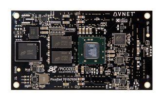

PicoZed¶
This document describes considerations for the PicoZed selection: part numbers and variants, capabilities, etc.
Summary: the AMDC uses the 7Z030 version of the PicoZed.
The 7Z015 version can work with the AMDC hardware design, but would require very slight firmware changes.

Background¶
The AMDC board is technically a “carrier card” for the PicoZed module. The PicoZed plugs into the AMDC board via the three high-density connectors. All the processing power of the AMDC is directly from the PicoZed – the AMDC hardware PCB has no processing capability of its own. The AMDC will not operate without the PicoZed! The AMDC hardware design is owned by the Severson Group and is available publicly on GitHub.
The PicoZed is technically a “system-on-module” (SoM) for the Xilinx Zynq processor. This means that the PicoZed includes all relevant circuitry to power and use the raw Xilinx processor. This includes the sensitive power supply circuitry, decoupling caps, volatile RAM, and non-volatile storage, and PHY devices (e.g., for Ethernet). The PicoZed comes in a variety of flavors – different Xilinx Zynq processors models. The cost per PicoZed varies from ~$180 to ~$380 depending on the performance and I/O capabilities.
The actual processor which drives the AMDC is the Xilinx Zynq System-on-Chip (SoC). All code runs on this processor. It is responsible for interfacing to the PCB subsystems, running the real-time user control code, and interfacing to the host PC system. The Xilinx Zynq SoC is a very interesting device with a complex architecture – it can be thought of as including a discrete FPGA and discrete DSP in the same device, with high-performance communication between them. Discussion on how the Zynq SoC works is beyond the scope of this article.
PicoZed Version Selection¶
The PicoZed is sold in various versions that differ by the Xilinx Zynq part model. The functionality is grouped as follows:
7Z010/7Z020have similar functionality and are fairly interchangeable7Z015/7Z030have similar functionality and are fairly interchangeable
However, the two groups are not exactly interchangeable – the I/O capability changes fairly drastically between the groups. The AMDC is designed for the 7Z015/7Z030 group since these have more I/O available.
7Z015 vs. 7Z030¶
Metric |
|
|
|---|---|---|
Price |
$265 each |
$375 each |
PicoZed Part Number |
||
Xilinx Zynq Part Number |
||
FPGA Resources (see next table) |
Less |
More |
Bond Technology |
Wire bond |
Flip-chip |
Clocks (PLLs) |
3 |
5 |
Technology(1) |
Artix-7 |
Kintex-7 |
Max clock speed(2) |
866MHz |
1GHz |
(1): Both are same process: TSMC 28nm HPL; but Artix-7 is tailored for lower cost, Kintex-7 is for higher performance. Typically ~15% speed penalty in Artix-7 over Kintex-7.
(2): For -3 grade silicon from Xilinx; this should correspond to Industrial or I grade PicoZed labeling, which both 7Z015 and 7Z030 are.
FPGA Resources |
|
|
|---|---|---|
PLC |
74K |
125K |
LUT |
46K |
78K |
FF |
92K |
157K |
BRAM |
3.3Mb |
9.3Mb |
DSP slices |
160 |
400 |
Overall, the 7Z030 version is clearly better, but comes at a cost premium of $110 per PicoZed. This is reasonable since the cost increase in the Xilinx Zynq SoC itself is $100 on Digi-Key. Therefore, you are simply paying more for a better Xilinx processor.
The end application will determine if the increased cost and performance is actually required. For most motor drive applications, the 7Z015 PicoZed version is sufficient.
PicoZed Supplier(s)¶
There is only one supplier: Avnet. See their PicoZed product offering on their website.
The official part number from Avnet is: AES-Z7PZ-7Z030-SOM-I-G/REV-E – the I implies industrial grade silicon and REV-E denotes the hardware design revision which is relevant when looking at documentation.